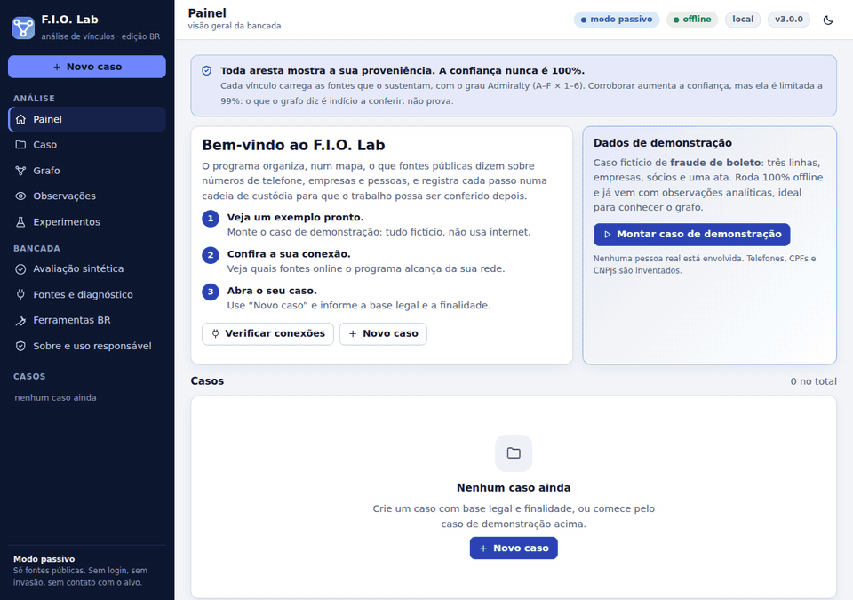
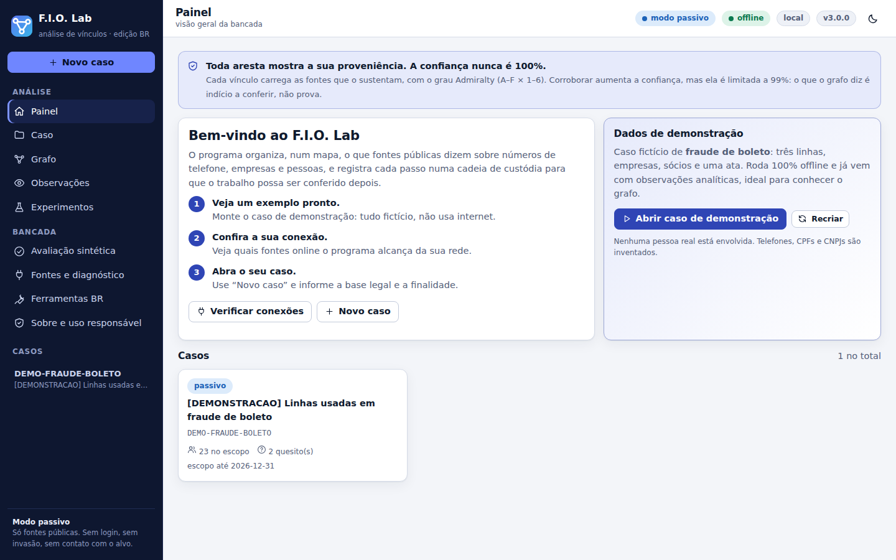
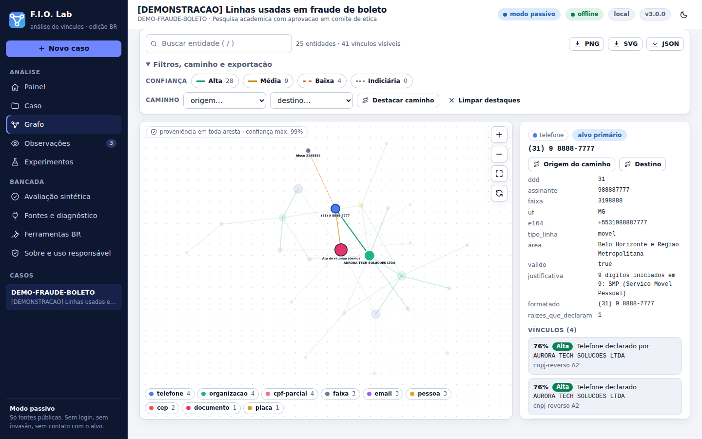
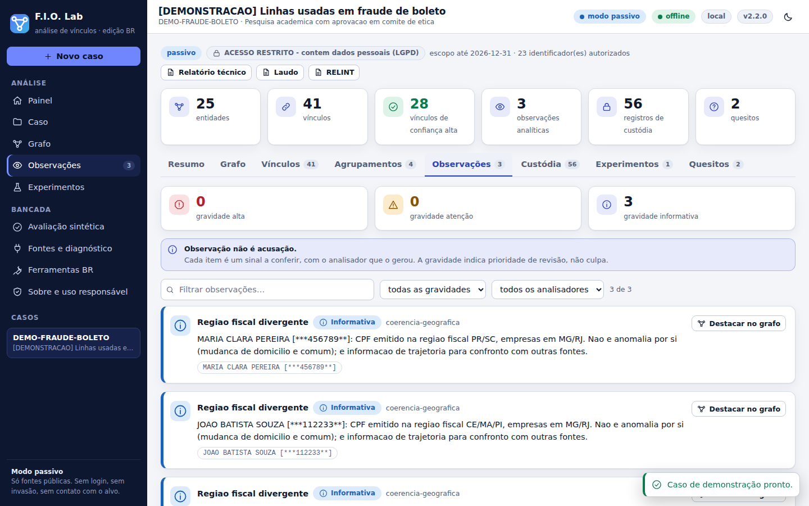
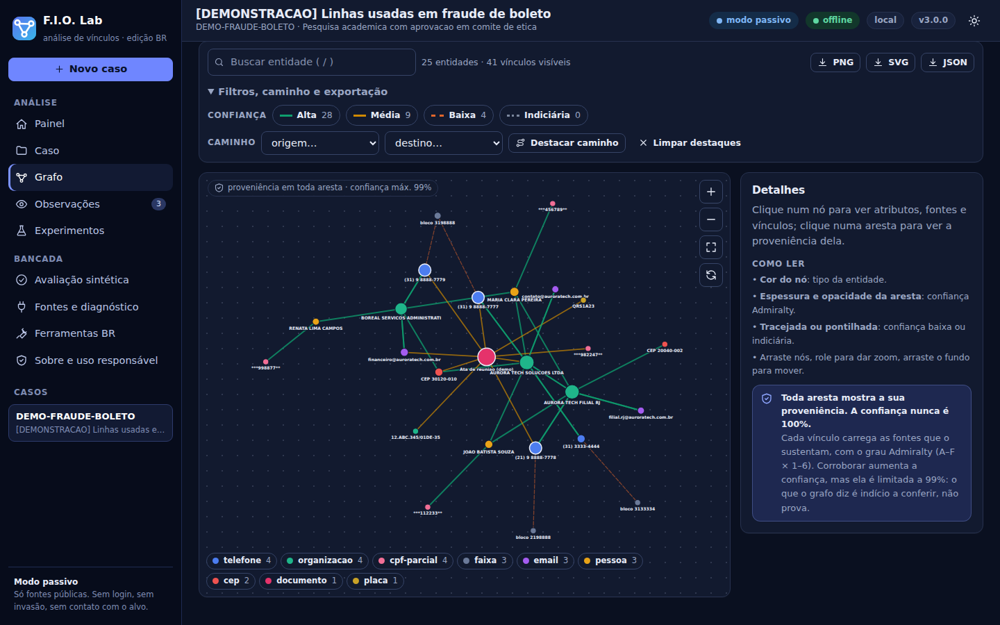

F.I.O. Lab
Estes números pertencem à mesma pessoa, à mesma empresa ou ao mesmo grupo? Com que confiança? E com que frequência essa resposta erra?
Do these phone numbers belong to the same person, company or group? How confident are we? And how often is that answer wrong? A Python OSINT lab for link analysis across Brazilian public records.

Três regras que não se negociam
O F.I.O. cruza telefones, CNPJs, sócios, e-mails, domínios e diários oficiais num grafo em que toda aresta carrega a fonte que a sustenta. Python puro, só biblioteca padrão, inclusive a interface web.
Sem escopo, sem coleta
Todo caso exige base legal, finalidade e prazo. O escopo é conferido a cada pivô; fora dele, o coletor não roda.
Sem fonte, sem vínculo
Confiança pela escala Admiralty, combinando só fontes independentes. Nunca chega a 100%.
Sem prova, sem conclusão
Cada conclusão cita a aresta que a sustenta. Tudo o que é coletado vai para um ledger encadeado por SHA-256.
Vínculo é coocorrência documentada entre identificadores, não relação comprovada. O relatório diz isso em toda página.
A bancada
Interface local, sem fontes nem scripts externos, com tema claro e escuro e layout que funciona no celular.




O que ele faz de diferente
Baseline diferencial
Consulta um valor que não pode existir e descarta respostas iguais: acaba com o “200 OK” que não diz nada.
Lote de registro
Empresas de raízes distintas abertas na mesma janela e ligadas por telefone, e-mail, CEP ou sócio: rede de fachada ou contabilidade?
Reuso de linha
Telefone declarado por empresa encerrada e por outra ativa: número reciclado, não operador em comum.
Claims rastreáveis
Conclusão sem evidência no grafo não entra no relatório.
Manifesto SHA-256
Detecta peça alterada, manifesto adulterado e ledger reescrito.
Calibração medida
Confiança declarada × precisão observada em mundos sintéticos com gabarito. Sem maquiagem.
Começar
Python 3.10 ou mais novo. Nenhuma dependência para instalar.
# linha de comando pip install git+https://github.com/Ridd1kulusC0d3r/FIO fio demo --abrir # caso fictício, offline fio lab bancada # http://127.0.0.1:8765
| Jeito | Para quem |
|---|---|
| Google Colab | testar sem instalar (sessão efêmera) |
| Dois cliques | leigos; Release + lançador do sistema |
| Linha de comando | técnicos e automação |
Guias completos (primeiros passos, conceitos, receitas de uso, referência da CLI, solução de problemas) em docs/guia.
Uso responsável
O F.I.O. recusa por construção: bases vazadas, credenciais de terceiros, interceptação, engenharia social e enumeração de plataformas de mensageria. A coleta é passiva e o CPF só entra no grafo mascarado (LGPD, art. 6º, III). Leia o guia de uso responsável antes do primeiro caso real.